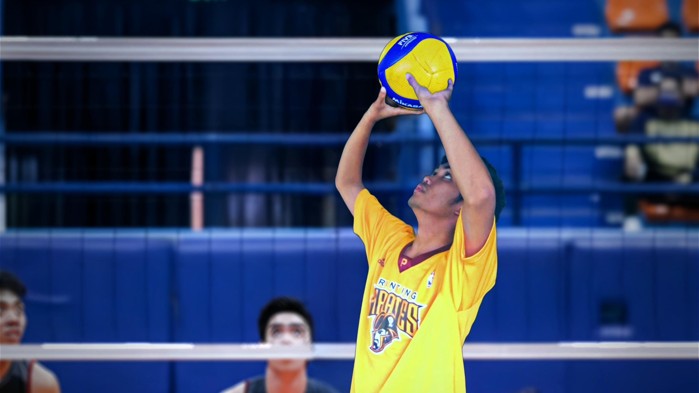
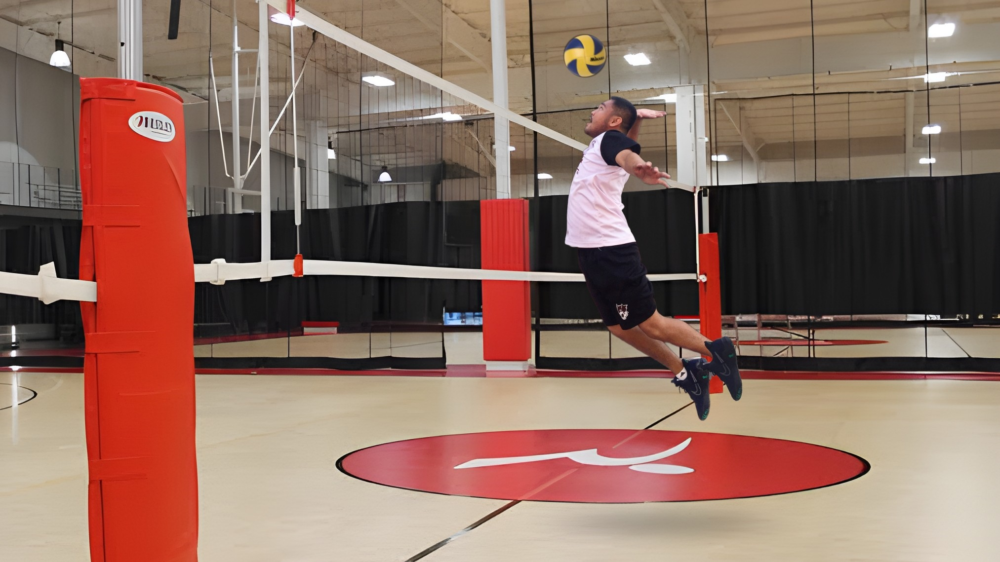

This Is The Skills that we should know
Set:

The set is like the quarterback's pass in football - it's a crucial technique used to deliver the ball to a teammate for an attack. With the tips of your fingers, you'll push the ball up and towards your target. It's a crucial technique that requires precision, accuracy, and teamwork, as you'll need to place the ball just right so your teammate can make a play. Think of it as a way to set up your teammate for a killer attack!
Attack/Spike:

The attack, also known as the spike, is like the home run in baseball - it is the ultimate offensive move in volleyball that's sure to leave your opponents in awe. With a running start, you jump high into the air, flex your muscles, and bring down the hammer with a forceful downward hit over the net. It's all about timing, technique, and confidence.
Dig:

The dig is like the ninja's quick reflexes - it's a technique used to save a ball that's close to the ground or has been hit with a lot of force. The dig is all about quick reflexes, lightning-fast reactions, and a fearless attitude. Whether it's a low, fast ball or a high, powerful hit, you'll use your body to get under the ball and prevent it from hitting the ground. A successful dig requires quick reflexes, good body control, and the ability to anticipate where the ball is going to be hit.
Block:

The block is like the goalie's save in soccer - it's a defensive technique used to stop the opposing team's attack. It's all about reading your opponent's movements and anticipating their attack. You'll jump and reach up to intercept the ball as it crosses the net, deflecting it back onto your opponents' side of the court. To be an effective blocker, you'll need to have good timing, positioning, and anticipation.
Serve:

The serve is the first move of each rally and can make or break a game. To perform a serve, stand behind the baseline, hold the ball with one hand, and hit it with the other hand or arm. Aim for the opponent’s court and vary your serves to keep them guessing.
 Mseufci//Home
Mseufci//Home